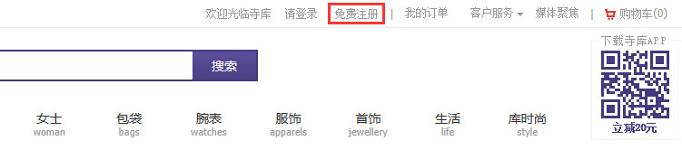
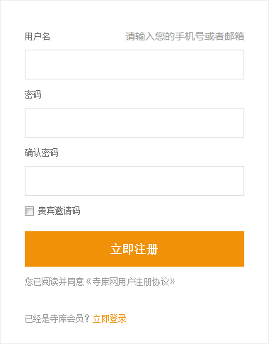
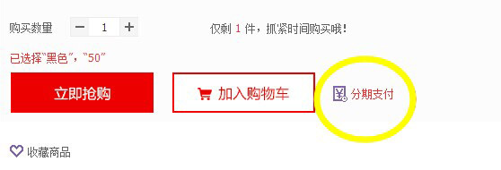
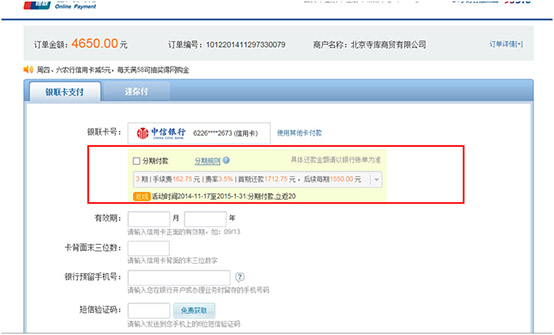

一、有两种方式可以注册为寺库会员
1.通过首页注册
1)通过首页注册

2)您可以通过邮箱/手机号码进行注册，按照提示填写准确信息，点击提交 "立即注册"

*注：请务必填写正确有效的邮箱地址，找回密码时需要到邮箱查询新密码邮件
2.结算时快速注册
1)选择您所需要的商品立即结算或加入购物车
2)出现结算页面，点击"立即结算"
3)弹出快速注册/登录页面，填写注册信息，点击"注册"按钮完成注册
二、注册完成后，点击寺库首页顶部"登录"正常登录账户即可
1. 登陆寺库账户，点击页面右上角“我的寺库”。
2. 在页面左侧导航栏找到“账户信息”， 点击 “账户信息”进入账户信息页面。在账户信息页面键入要修改的信息点击“提交”完成信息修改。
3. 在页面左侧导航栏找到“账户安全”， 点击 “账户安全”进入账户安全页面在账户安全页面点击相应信息后面的修改按钮， 验证手机号码后可修改该信息。
·点击“登陆密码”后的修改按钮，进入登陆密码修改页面。
·点击“请填写手机检验码”后的“获取短信检验码”。
·收到检验码后请在“填写手机检验码”栏位输入该检验码。
·输入验证码。
·点击提交进入登陆密码修改页面。
·填写并确认新密码。
·输入验证码。
·点击“提交”，登陆密码修改即完成。
本协议是您与寺库平台（简称"本站"）所有者（以下简称为"寺库"）之间就寺库平台的商品、 服务销售等相关事宜所订立的契约，请您仔细阅读本注册协议，您选择注册成为寺库会员时， 或者选择从本站购买任何商品或服务，或使用本站的任何服务本协议，即构成对双方有约束力的法律文件。
第1条 本站服务条款的确认和接纳
1.1如果您在18周岁以下，您只能在父母或监护人的监护参与下才能使用本站。
1.2用户点击同意本协议的，即视为用户确认自己具有享受本站服务、下单购物等相应的权利能力和行为能力，能够独立承担法律责任
1.3本站的各项电子服务的所有权和运作权归寺库所有。用户同意所有注册协议条款并完成注册程序，才能成为本站的正式用户。用户确认： 本协议条款是处理双方权利义务的契约，始终有效，法律另有强制性规定或双方另有特别约定的，依其规定。
1.4寺库保留在中华人民共和国大陆地区法施行之法律允许的范围内独自决定拒绝服务、关闭用户账户、清除或编辑内容或取消订单的权利。
第2条 本站服务
2.1寺库通过互联网依法为用户提供各类商品及各项服务，用户在完全同意本协议及本站规定的情况下，方有权使用本站的相关服务。
2.2用户必须自行准备如下设备和承担如下开支：（1）上网设备，包括并不限于电脑或者其他上网终端、 调制解调器及其他必备的上网装置；（2）上网开支，包括并不限于网络接入费、上网设备租用费、手机流量费等。
第3条 用户信息
3.1用户应自行诚信向本站提供注册资料，用户同意其提供的注册资料真实、准确、完整、合法有效， 用户注册资料如有变动的，应及时更新其注册资料。如果用户提供的注册资料不合法、不真实、不准确、 不详尽的，用户需承担因此引起的相应责任及后果，并且寺库保留终止用户使用寺库各项服务的权利。
3.2用户在本站进行浏览、下单购物等活动时，涉及用户真实姓名/名称、通信地址、联系电话、电子邮箱等隐私信息的， 本站将予以严格保密，除非得到用户的授权或法律另有规定，本站不会向外界披露用户隐私信息。
3.3我们可能分享的信息
除以下情形外，未经您同意，我们以及我们的关联公司不会与任何第三方分享您的个人信息：
我们以及我们的关联公司，可能将您的个人信息与我们的关联公司、合作伙伴及第三方服务供应商、承包商及代理 （例如代表我们发出电子邮件或推送通知的通讯服务提供商、 为我们提供位置数据的地图服务供应商）分享（他们可能并非位于您所在的法域），用作下列用途：
向您提供我们的服务；
履行我们在《用户注册协议》或相关隐私条款中的义务和行使我们的权利；
理解、维护和改善我们的服务；
分析用户如何使用我们的服务，或用户的消费习惯。
如我们或我们的关联公司与任何上述第三方分享您的个人信息，我们将努力确保该等第三方在使用您的个人信息时遵守隐私政策及我们要求其遵守的其他适当的保密和安全措施。
随着我们业务的持续发展，我们以及我们的关联公司有可能进行合并、收购、资产转让或类似的交易，您的个人信息有可能作为此类交易的一部分而被转移，我们将在转移前通知您。
我们或我们的关联公司还可能为以下需要而保留、保存或披露您的个人信息：
遵守适用的法律法规；
提示：本《寺库网用户注册协议》中约定有关争议管辖应提交寺库注册地人民法院。一、登陆找回密码
1.在寺库登录页面，点击“忘记密码”。
2.请输入您在登录时使用的邮箱/手机号及图形验证码，点击“下一步”。
二、通过邮箱/手机找回密码
1.通过邮箱找回密码
1) 点击“登录邮箱”。
2)点击发送到邮箱的链接，设置新密码。
3)输入2次密码，点击“确定”。
2.通过手机找回密码
1) 输入手机号码，点击“获取验证码”，验证码发送至手机上。
2)将您手机收到的短信验证码输入。
3)输入2次密码，点击“确定”。
4)提示密码设置成功，操作完成。
一、挑选商品
1.您可以通过搜索功能输入关键字的方法查找您想要购买的商品, 还可以通过分类导航查看商品分类并找到您想要购买的商品。
二、加入购物车
1.在您想要购买的详情页点击“加入购物车”，商品会添加到您的购物车中， 您可以继续挑选商品。您也可以点击“立即抢购”，马上结算商品。
2.购物车商品
1) 在购物车中，系统默认每件商品的订购数量为1件，如果您想购买多件商品，可修改购买数量。
2) 在购物车中，您可以将商品选择删除，或可以进行清空购物车的操作，重新挑选。
3) 在购物车中，您可以直接查看到订单的享受的优惠和优惠金额。
4) 购物车页面下方的商品依次为：猜您喜欢的商品、购最近浏览的商品， 若有您需要的商品，点击“放入购物车”即可。
*温馨提示： 1.商品价格会随着市场行情调整，当您看中某款商品时，请及时入手吧。
2.账户登录状态下放入购物车的商品，更换电脑后仍可看到购物车中的商品；账户未登录状态下放入购物车的商品，更换电脑后将 无法看到购物车中的商品。
三、确认购买
当您挑选好需购买的商品后，点击购物车的“立即结算”按钮跳转至订单信息页面。
四、填写订单信息
1.填写收货人信息：收货人姓名，地址及电话等信息，并点击确认收货地址。
请填写正确完整的收货人姓名、收货人联系方式、详细的收货地址和邮编，否则将会影响您订单的处理或配送。 您可以进入“我的寺库-账户管理”设置默认收货地址，保存成功后，再订购时，可以直接选择使用。
2.确认支付配送方式：确认详细的支付方式、配送方式、送达时间等信息，并点击确认送货方式。
3.索取发票：填写正确的发票抬头、发票内容为商品明细、日用品、礼品，并确认发票信息。
*注：订单变成已完成后您联系客服进行补开。
4.确认商品清单：确认购买商品的品类、数量、价格、金额及促销、优惠等信息。
5.确认使用优惠券。
五、提交订单
1.以上信息核实无误后，请点击“提交订单”，系统生成一个订单号，提示您已经成功提交订单。
2.订单提交成功后，您可以登陆“我的账户-订单中心 ”管理订单信息。
六、购买须知
1.为什么先鉴定后发货
该商品为寺库各地分库调拨商品，订单产生后，所有分库调拨商品将统一发到寺库鉴定总部进行鉴定， 被鉴定商品合格后给您发货！如被鉴定商品不合格，我们将与您再次联系确认是否取消订单。
2.其他注意事项
1)由于是寺库分库调拨商品，订单产生后，须发货到寺库鉴定总部鉴定， 因此给您最终的快递时间为5-15天（快递时间取决于该商品所在的库位）
2)部分分库商品暂不支持货到付款（在商品展示页提示支持"货到代收"商品除外）。
3)部分分库商品暂不接受退换货受理（商品本身质量问题除外）。
4)如有商品质量问题退换货，退换货快递费用由寺库承担。
5)退换货发生时，商品中包含附件、赠品、商品说明资料以及发票等请一并寄回，否则无法退换货！
*温馨提示：为了您的购物安全，寺库会为您所购买的商城商品提供免费鉴定服务，货品鉴定合格的会在规定时间发送给您， 若被鉴定商品不合格，寺库将取消您的订单，同时全额退还您支付的款项。
一、 订单提交：订单已经提交成功，等待支付或客服审核 。
二、已审核：客服已经审核通过订单。
三、配货中：订单进入仓库配货状态。
四、已发货：订单商品已经从库房发出，配送人员已经出发。
五、已签收：商品已经被签收。
六、已完成：订单签收7天内后正常流转完成。
七、已取消：订单有用户主动取消或系统自动取消。
1、只能对180天内购买的订单进行评价，超过180天则不能评价；
2、退换货订单产生的商品评价将会被删除，未作出评价的将不能评价；
3、鼓励发表原创、有价值的评价；杜绝剽窃、无意义、违反法律法规的评价内容；
4、发表评价成功后会对评价文字及图片进行审核，审核通过即被展现出来；不予审核通过的情况如下：
▪ 评价文字与商品无关，且出现言辞露骨的情况；
▪ 评价图片及文字与所购商品不一致；
▪ 评价图片为商品的截屏图片；
▪ 图片中与商品无关，图片中涉及淫秽、色情等违法不良信息；
▪ 未经过他人同意，涉及使用他人图片或将他人图片进行编辑后发布；
▪ 盗用他人图片经举报、诉讼情况属实；
▪ 图片中涉及敏感词汇（如：领导及伟人姓名、淫秽词汇等）；
▪ 图片涉及与寺库客服聊天记录；
▪ 对成人用品发布图片，未对特殊部位进行遮挡；
5、为保护您的利益，请选择匿名评价，将不会展示您的用户名，如未选择匿名评价，我们也会对敏感信息（如：手机号、邮箱）进行遮挡。
如何注册
1. 登录寺库网站：www.secoo.com 点击页头左上角的“注册”按钮，进入注册表单页面：
按照提示输入手机号或邮箱、密码（密码设置不要过于简单），并输入确认验证码，点击 “立即注册” 即可。
2. 在订购过程中注册开户
进入寺库网选择您所需要的商品，点击购买放入购物车，按照页面引导进行注册即可。
会员规则
1.寺库付费会员目前分为：月卡套餐、季卡套餐、年卡套餐
会员有效期如何计算？
1.月卡会员有效期为自付费之日起30天。
2.季卡会员有效期为自付费之日起90天。
3.年卡会员有效期为自付费之日起365天。
寺库会员权益
- 会员特权
- 普通用户
- 月卡会员
- 季卡会员
- 年卡会员
- 会员折扣
- 无
- 可享
- 可享
- 可享
- 会员折扣
- 无
- 可享
- 可享
- 可享
- 会员折扣
- 无
- 可享
- 可享
- 可享
- 会员折扣
- 无
- 可享
- 可享
- 可享
- 会员折扣
- 无
- 可享
- 可享
- 可享
- 会员折扣
- 无
- 可享
- 可享
- 可享
Secoo.com及相关的APP、WAP站点等均系寺库面向社会、服务大众的网络窗口， 向广大客户销售各类商品及服务，提供各类信息服务以及多项网络实用功能， 凡浏览本网站及相关网页的用户，均表示接受以下条款。寺库保留对本声明包含的条款、 条件和说明变更的权利。变更自公布时生效，您继续使用本网站，则视为您接受这些更改。 您应当经常浏览本网站声明，以了解本网站信息的变化。
网站进入
您通过其他网站的链接进入本网站可能存在登录假冒寺库商城网站的风险，建议您采用安全的方式 （如在浏览器地址栏直接键入网址http://www.secoo.com或点击收藏夹内记录的正确网址）访问本网站。
信息声明
浏览者可以下载本网站上显示的资料，但这些资料只限用于个人学习研究使用， 不得用于任何商业用途，无论是否在资料上明示，所有此等资料都是受到版权法的法律保护。 浏览者没有获得寺库商城或各自的版权所有者明确的书面同意下， 不得分发、修改、散布、再使用、再传递或使用本网站的内容用于任何公众商业用途。
意见声明
未由本站以本网站名义正式表述，出现在本站中的任何其他发言或意见均属于个人观点，并不代表寺库商城的意见。
合法权益
1、任何使用寺库商城的用户均应仔细阅读本声明，用户使用寺库商城的行为将被视为对本声明全部内容的认可。
2、寺库商城尊重并保护所有使用本站用户的个人隐私权，用户注册的用户名、电子邮件地址等个人资料， 非经用户亲自许可或根据相关法律的强制性规定，本站不会泄露给第三方。
3、任何单位或个人认为通过寺库商城的内容可能涉嫌侵犯其合法权益， 应该及时向寺库商城网站书面反馈，并提供身份证明、权属证明及详细侵权情况证明， 我们在收到上述法律文件后，将会尽快安排处理。
版权与商标声明
寺库商城网站版权寺库商城网，所有权利在中国大陆范围内受法律保护。 “寺库”是我公司的注册商标，其他机构未经我公司书面同意不得引用和展示该商标。
1、本站用户出于传递更多信息之目的公开的任意信息，并不意味我公司赞同其观点或证实其内容的真实性。
2、由于工作的复杂性，工作中难免有人员存在疏漏或遗忘， 如若转载作品侵犯作者署名权，并非出于本网故意，在接到相关权利人通知后， 本站会加以更正。
网站链接
当本网站以链接形式推荐其他网站内容时，本网站并不对这些网站或资源的可用性负责， 且不保证从这些网站获取的任何内容、产品、服务或其他材料的真实性、合法性，对于任何因使用或信赖从此类网站或资源上获取的内容、 产品、服务或其他材料而造成（或声称造成）的任何直接或间接损失，本网站均不承担任何责任。
个人资料保密
1、您通过本网站提供的任何个人资料，将仅由寺库商城使用，以改善寺库商城提供给您的服务。 寺库商城尽力保证按您提供的个人资料的原始真实性收集、传送和存储个人资料。 寺库商城将不使用您的个人资料给您提供不重要的消息或信息，同时，未经您的许可， 寺库商城将不与第三方共享资料或将资料销售给第三方， 但根据法律或政府的强制性规定予以提供的，寺库商城均得免责。
2、您不得向或从本网站邮寄或发送任何带有病毒的、涉及侮辱、诽谤、 造谣的或其他中国相关法律规定的非法或侵权的材料和信息。寺库有权对您输入到本网站上的信息进行监视和/或检查， 寺库保留完全依其决定不必事先通知且不必说明理由而检查您输入的信息和删除您输入的信息的权利。
3、任何由于计算机问题、黑客攻击、计算机病毒侵入或发作、 因政府管制而造成的暂时性关闭等影响网络正常经营的不可抗力而造成的个人资料泄露、 丢失、被盗用或被窜改等，寺库均得免责。
购物成功判断标准
由于商品的特殊性，本站很多商品都是唯一一件，这些商品在寺库官网及各店铺都是同时销售， 如果发生了重复订单，我们以确认付款先后为唯一判断标准，与在线放入购物车的时间， 或在实体库会所内浏览商品时间的长短无关，请周知。 如果您选中的商品在您付款前被其他顾客抢先付款了， 请您联络我们的销售人员，我们尽量与品牌及供应商协调为您提供同价同款的商品。
服务中断与提醒声明
1、不担保或保证网络服务一定能满足用户的要求，也不担保网络服务不会中断，对网络服务的及时性、 安全性、准确性也都不作任何担保或保证。用户须独立承担前述风险。寺库对于用 户使用寺库商城服务或无法使用网络服务所导致的计算机软、 硬件的损害或发生资料的流失等任何直接、间接、附带、特别、衍生的损害不承担任何责任。
2、由于寺库中国货品单一特性，寺库会员下订单完成之后，需要等待寺库中国客服确认接受该订单之后， 该订单才算做成立。寺库履行上述提醒后，不再承担订单成立提醒之外的任何提示义务。
不可抗力
对于因不可抗力或寺库不能控制的原因造成的网络服务中断或其它缺陷 ，寺库不承担任何责任，但将尽力减少因此而给用户造成的损失和影响。
不声称或保证准确性
尽管寺库尽力确保本网站所有信息的正确性和适时性，但并不能保证其为完全准确，寺库对本网站信息的准确性、完整性和真实性不作任何承诺；对信息的迟延、失误和遗漏不承担任何责任。
责任限定
寺库明确声明：不承担您因接入或使用本网站而产生的直接、间接、附带的、后继的或特殊的损失，包括因病毒影响您的计算机设备或依赖从本网站获得的信息等而造成的损失。
声明内容的更新
寺库保留根据业务需要随时对本声明内容进行更新的权利，请您在每次登录本网站时访问此网页， 查看本网站的当前声明内容。
第三方通知
如第三方通知寺库网站存在侵权信息、材料，寺库将在核实有关情况后，及时对该等信息、材料采取删除、 屏蔽、断开链接等必要措施。寺库尽到上述义务后，不再承担任何责任。
寺库账户
1、寺库网有权在发生恶意购买、套利、套现等扰乱市场正常交易秩序的情形下， 执行包括但不限于冻结注册账户、注册账户内余额、礼品卡/礼券金额、关闭相应交易订单、拒绝发货等操作。 寺库网保留在中华人民共和国法律允许的范围内独自决定拒绝服务、关闭账户、清除或编辑内容或取消订单的权利。
2、当您访问网站或给我们发送电子邮件时，您与我们用电子方式进行联系。 您同意以电子方式接受我们的信息。我们将用电子邮件或通过在寺库网上发布通知的方式与您进行联系。 您同意我们用电子方式提供给您的所有协议、通知、披露和其他信息是符合此类通讯必须是书面形式的法定要求的。 如果寺库能够证明以电子形式的信息已经 发送给您或者寺库立即在寺库网站上张贴这样的通知，将被视为您已收到所有协议、声明、披露和其他信息。
3、寺库网保留通过邮件和短信的形式，对本网站注册、购物用户发送订单信息、 促销活动等告知服务的权利。如果您在寺库网注册、购物，表明您已默示同意接受此项服务。 若您不希望接收寺库网的邮件，请在邮件下方输入您的E-mail地址自助完成退阅； 若您不希望接收寺库网的短信，请提供您的手机号码联系客服处理。
合同的订立
1、在您下订单时，请您仔细确认所购商品的名称、价格、数量、 型号、规格、尺寸、联系地址、电话、收货人等信息。收货人与用户本人不一致的，收货人的行 为和意思表示视为用户的行为和意思表示，用户应对收货人的行为及意思表示的法律后果承担连带责任。
2、除法律另有强制性规定外，双方约定如下：本网站上寺库 展示的商品和价格等信息仅仅是要约邀请，您下单时须填写您希望购买的商品数量 、价款及支付方式、收货人、联系方式、收货地址（合同履行地点）、 合同履行方式等内容；系统生成的订单信息是计算机信息系统根据您填写的内容自动生成的数据
商品信息：
本站上的实物及服务类商品的价格、数量、是否有货等各项商品信息随时都有可能发生变动， 本站不作特别通知。为表述便利，商品和服务于本协议中均简称为"商品"或"货物"。
由于网站上商品信息的数量极其庞大，虽然本站会尽最大努力保证您所浏览商品信息的准确性， 但由于众所周知的互联网技术因素等客观原因存在，本站网页显示的信息可能会有一定的滞后性或差错， 对此情形您知悉并理解；寺库欢迎纠错，并会视情况给予纠错者一定的奖励。
价格
直到您发出订单，我们才能确认商品的价格。尽管我们做出最大的努力， 我们的商品目录里的一小部分商品可能仍然存在定价错误。 如果我们发现错误定价，我们将采取下列之一措施：
(1) 如果某一商品的正确定价低于我们的错误定价，我们将按照较低的定价向您销售交付该商品。
(2) 如果某一商品的正确定价高于我们的错误定价，我们会根据我们的情况决定，在交付前联系您寻求您的指示， 或者取消订单、停止发货并通知您，或在其他情况下与您告知其他解决方案。
价格变化和缺货
产品的价格和可获性都在寺库网站上指明，这类信息将随时更改且不发任何通知。 送货费将可能另外结算，费用根据您选择的送货方式的不同而异， 最终价格将于您支付前显示，但最终订单之确认仍应以寺库最终发出商品或提供服务为准
付款与退款
1、付款方式将在“寺库”官方网站予以公示。用户应在确认订单时，选择付款方式，并严格按照已选择的方式付款。 用户未能按照所选择的方式或所要求的时间完成付款的，“寺库”有权单方取消订单。
2、退货或换货商品缺货时产生的现金款项，退回方式视支付方式的不同而不同
一、库支付
1.获取
寄卖赚库币，充值得库币！
1)现金收货：寄卖时选择库支付收货的方式结算货款，结算库币打入会员库支付账户。
2)寄卖结算：寄卖结算，会在订单完成3个工作日内，结算库币打入会员库支付账户。
3)充值的库币：在线或者在库会所充值立刻可获得库币。
*友情提醒：充值和寄卖均需提供个人身份证件。
2.使用
使用库支付，兑换无限额更快捷！
1)本次使用金额：本次使用金额不能大于账户当前可用金额。
2)手机号：库账户绑定的手机号（寄卖客户默认绑定寄卖时填写手机号）。
3)支付密码：当第一笔款项转入库支付账户中时会有短信通知您支付密码，您可在我的寺库中进行修改或找回。
3.提现
提申请，即可将库币转化为等值现金！
寄卖款提现：寄卖品售出次月15日可申请提现，在寺库网站进行提现申请。
寄卖款提现：寄卖品售出次月15日可申请提现，在寺库网站进行提现申请。 登录网站后， 在我的寺库——账户余额页面，提现方式选择“现金结算”，填写现金结算提现申请单， 选择需要预约的时间，审核通过后按照预约时间，携带身份证件去预约会所取现
1)网站用户名与密码：在您寄卖后系统会自动创建用户名与密码，并以短信形式发送到寄卖时所留手机号。
2)提现金额：提现金额不能大于当前账户可提现金额。
3) 提现方式：请选择现金结算。
*注：在线支付为实时到帐。请您在订购成功后1小时内完成支付，否则我们将不会保留您的订单。
一、银联支付详情介绍
中国银联银行卡在线支付网关支持国内18家银行的借记卡和信用卡： 工商银行、农业银行、中国银行、建设银行、交通银行、招商银行、兴业银行、浦发银行、广东发展银行 、中信银行、民生银行、中国邮政、东亚银行、南京银行、渤海银行、中国光大银行、华夏银行、深圳发展银行。
*温馨提醒：目前各银行对于网上支付均有卡种、金额的限制， 点击查看详情。带有"直"符号为银行直连支付，适合大额订单支付。
二、支付平台详情介绍
一、信用卡分期付款介绍
中国银联跨行分期付款产品是指持卡人“在线支付”渠道向发卡行联机获取分期消费交易授权， 由发卡行向商户全额垫付交易资金，持卡人分期向发卡行偿还消费款项的新型消费业务模式。
商品详情页，有分期支付提示：

二、如何使用信用卡分期付款？
1、下订单后去结算
2、选择“信用卡分期”中的“银联在线支付”，确定支付方式
3、跳转到“银联在线支付”网关，持卡人输入要付款的银联卡号，点击“下一步”
4、“银联在线支付”网关展示分期付款选项，持卡人勾选“分期付款”，选择分期期数，输入银行卡验证要素，确认付款

5、“银联在线支付”网关提示持卡人分期成功
三、使用信用卡分期付款的订单起始金额及手续费是多少？
每家银行支持分期的订单起始金额是不同的，具体如下：
目前银联卡分期返现活动：
银联分期返现活动：2014年11月17日至2015年1月31日分期付款立返20元
四、信用卡分期付款的上限额度是多少？
采用分期付款的订单金额上限等同于您所持信用卡的信用额度，也就是说只有您的可用信用额度大于所想购买商品价格时， 才能使用信用卡分期付款方式支付。具体您所持信用卡的信用额度咨询发卡银行。
五、信用卡分期付款是如何扣款的？
您的交易金额会由银行一次性扣款，之后您只需要根据期数和每期还款金额进行还款即可。
六、分期手续费是分期收取的还是一次性收取？
每家银行分期手续费的收取方式不同，具体请以“银联在线支付网关”提示的“分期规则”为准。
七、若发生退款，分期付款的手续费如何退还？
如果需要退款，请联系商户。退款成功后会将商品金额退还至您的信用卡，分期手续费由您的发卡银行退还，具体退还方式请咨询发卡银行。
1、您确认，在您使用本快捷支付服务（以下简称“本服务“）时， 您是具有中华人民共和国法律规定的完全民事权利能力和民事行为能力的， 能够 独立承担民事责任的自然人（中华人民共和国境内（香港、澳门除外）的用户应年满18周岁）， 或者是在中国大陆地区合法开展经营活动或其他业务的法人或其他 组织； 本协议内容不受您所属国家或地区法律的排斥。不具备前述条件的，您应立即终止使用本服务。
2、本协议条款与您的权益具有或可能具有重大关系，请您在同意接受本服务前确认，您已经充分阅读、 理解并接受本协议的全部内容，一旦您选择本服务，即表示您同意遵循本协议的所有约定。
3、您知晓，您选择使用的本服务要求您提供个人的支付信息，您需保证您所提供的所有信息是真实的、合法的、正确的、完整的。本协议所指支付信息是指您使用本服务时需要提供的个人信息，包括但不限于账户名、密码、个人姓名、身份证号码、银行卡号等。
4、您同意，为了提供本服务的技术需要，我们有权采集、获取或在系统内保存您的部分支付信息。
5、我们将严格确保您的个人信息和支付信息的安全。
6、您知晓，您如使用本服务进行支付的，应当在确认支付金额后输入密码进行支付。您认可和同意：输入密码即视为您确认交易和交易金额并已不 可撤销地向我们的支付系统发出指令，我们有权根据您的指令委托银行或第三方从您绑定的银行卡中将您确认的交易资金划扣给收款人。您不应以非本人意愿交易或 其他任何原因要求退款或承担其他责任。
7、您承诺，对使用本服务过程中您发出的所有指令的真实性、有效性承担全部责任；我们依照您的指令进行操作的一切风险由您自行承担。
8、您认可，您使用本服务所涉及的账户的使用记录数据、交易金额数据等均以我们系统平台记录的数据为准。
9、您保证，不向其他任何人泄露该支付信息。您知晓，您应妥善保管银行卡、卡号、密码以以及您的账号、密码、数字证书等与银行卡或与您的支付账户 有关的一切信息。如您遗失银行卡、泄露账户密码或相关信息的，您应及时通知发卡行及/或我们，以减少可能发生的损失。因泄露密码、数字证书、丢失银行卡等 导致的损失需由您自行承担
10、您认可，在我们有合理理由怀疑您提供的资料错误、不实、过时或不完整的情况下，本公司有权暂停或终止向您提供部分或全部本服务，您将承担因此产生的一切责任，公司对此不承担任何责任。
11、您认可，如果您违反本协议的约定；或违反本网站或其他关联公司网站的条款、协议、规则、通告等相关规定，而被终止提供服务的，我们有权暂停或终止向您提供部分或全部本服务，您将承担因此产生的一切责任，公司对此不承担任何责任。
12、如您发现有他人冒用或盗用您的账户及密码或任何其他未经合法授权之情形时，应立即以书面方式通知本公司并要求本公司暂停本服务。我们 将积极响应您的要求，但您理解，对您的要求采取行动需要合理期限，在此之前，本公司对已执行的指令及(或)所导致的您的损失不承担任何责任。
*注：当您通过银行汇完款后，请与我们的客服人员联系，说明您的汇款金额、汇款银行、汇款时间等，以便我们在第一时间处理您的订单，及时为您配送商品。银行汇款订单在下单6 小时后，如我公司未收到汇款，订单将被系统自动取消。
银行汇款是目前比较有效快捷的支付方式，根据各个银行的情况，相同银行一般为实时到账。异地跨行大约需要2~7个工作日到帐，手续费也各不 相同。可通过银行营业网点柜台、自助取款机、网上转账等方式付款。选择银行汇款支付的顾客，请在下单完成后尽快到银行柜台进行汇款，银行汇款订单在下单6 小时后，如我公司未收到汇款，订单将被系统自动取消。前确认，您已经充分阅读、理解并接受本协议的全部内容，一旦您选择本服务，即表示您同意遵循本协议的所有约定。
全国各地区都可采用此种支付方式，汇款账户信息如下：
*温馨提示：
当您通过银行汇完款后，请与我们的客服人员联系，说明您的汇款金额、汇款银行、汇款时间等，以便我们在第一时间处理您的订单，及时为您配送商品；
付款与收费
1、单笔交易代收金额最高为30000元，订单超过30000元的部分需预先支付。
2、寺库网站默认快递公司为联邦快递，支持现金、POS机刷卡两种付款方式(点击查看货到付款城市)；同时支持顺丰、ems等，我们会根据您所在的城市选择快捷的快递公司。
一、如何获得发票?
1. 电话订购时，确认好所需要的产品后，请将您的发票抬头及内容提供给客服人员。
2. 如您在网站订购，请在提交订单时在“您是否需要开具发票”处选择“是”，并填写发票抬头及所开具的内容。
3. 本公司依法开具的发票均是经税务机关批准的正规发票，此发票可用作单位报销使用。
4. 发票会在您收到货物7天后,状态变为已完成确保无退换货的情况下即可为客户开具发票。
二、“寺库”是否提供增值税专用发票？
不提供增值税专用发票
三、开发票注意事项
1. 发票金额不能高于订单金额、金额不含运费、返现库币、优惠券金额;
2. 发票不可合开，只能一张订单开一张发票;
注：海外订单不支持开具发票。
四、发票抬头
发票抬头不能为空，可写个人、公司、姓名
五、发票内容
根据您订购的商品，我们会提供相应的发票内容，超出范围外的发票内容无法开具。
【温馨提示】根据国家税务总局2017年第16号公告规定，自2017年7月1日起，对于购买方为企业的，索取增值税普通发票时，应向销售方提供纳税人识别号或统一社会信用代码。否则取得的未填写“购买方纳税人识别号”信息的增值税普通发票为不符合规定的发票，不得作为税收凭证。
一、 如何获取优惠券
活动发放，“寺库”某些活动可免费在库会所获取纸质优惠券，用户可在所有库会所消费使用，也可在线上商城激活后使用。
二、 如何使用优惠劵
1.选购完商品后，进入结算流程，在“订单信息确认”页面的“结算信息”板块， 点击“(+)使用优惠券抵消部分商品金额”。
2.选择要使用的实体库券或电子库券
*温馨提示：1.如果是实体库券，在输入框内输入实体库券密码点击确定即可。选择完优惠券之后，点击“提交订单”即可。
2.不论电子还是实体优惠劵每次只能使用一张订单，不可以使用多个订单。优惠券一旦使用，将无法退回，请在使用前斟酌确认。
三、查看优惠券
1. “优惠券”在寺库购物时可充当现金使用，并且一张优惠券只能使用一个订单，不可以使用多个订单。优惠券不可兑换以及返现。
2、订单中商品金额必须满足一定条件时才可以使用优惠券，例如：消费金额2000-即可使用100元的优惠券，所下订单中商品金额需要在2000元以上才可以使用。每笔订单只能使用一张优惠券;
四、优惠券使用规则
1.优惠政策、配送时间、支付方式等都有可能进行调整，请随时关注网站公布的最新信息。
2.获得实体库券的用户可登录用户中心-我的优惠券激活并保存，并在有效期内使用（电子优惠券无须激活但仍需在有效期内使用），具体使用规则详见网站公告。
3.使用优惠券支付的订单，发生退换货的订单，退款结算按照实际结算金额退款，优惠券不予退回和兑换。
4.活动发放优惠券均有详细使用细则，请务必按照活动页面细则使用。
*注：寺库所有优惠券均无法购买黄金，美妆及海外站商品。
一、配送政策
1.货到付款客户需加收2%的商品保险费用，详细请查阅配送范围及时间的相关说明。
2.到店自提的客户，需支付20%预订金，到店后再付80%尾款，详细请查阅配送范围及时间的相关说明。
3.海外商品配送要求请参阅各海外站购物说明。
二、其它注意事项
1.关于收货信息
1)收件人请填写中文名字，如使用非中文名字，请务必与身份证或护照保持完全一致，以保证您的包裹可以准确送达。
2)寄件地址请填写详细地址，以避免因地址不详造成您无法按时收到商品。
3) 如因收件人信息有误，造成包裹无法送达或丢失，寺库不承担任何责任。
2.关于发货
1)寺库在核对您所订购的商品、邮寄地址、款项支付等信息无误后确认订单，订单确认后会尽快给您发货。
2)发货时间：在您订购时，商品详情页面有预计发货时间，供您参考。
3)当包裹发出时，我们会将订单号、配送的物流公司名称及包裹单号等内容以短信形式通知，请注意保存便于收货时进行相应的核对。
4)包裹发出后，您可以在账户的订单信息中，通过“物流跟踪”功能查询包裹在途情况。
一、 普通快递/货到付款
*温馨提示：
1.我们优选择顺丰速运为您配送，如您的地区顺丰无法到达，将改由EMS或其他快递为您配送。
2.货到付款的订单，我们将加收您2%的商品保险费用。
二、 管家物流
选用此方式的顾客，我们将安排寺库物流管家专程为您配送。
目前寺库国内自提点只限北京、上海、成都，海外自提点信息请您查看各海外站购物说明。
一、提货流程
1. 您在寺库提交自提订单后，待订单状态显示“已核货”或者收到寺库的短信或邮件通知后,可前往相应自提点提货（其他订单状态请勿前来自提）。
2. 客户到达自提点后,请将订单编号提供给工作人员。
3. 提货时请出示收货人身份证，非本人提货时取货人请出示收货人与取货人身份证
4. 货物交接时请提供订单编号、收货人姓名并支付货款。
5. 客户签收后取走货物，具体验货签收标准请查看商品验货与签收说明
二、注意事项
1. 到店自提的订单需先支付20%的预订金。
2. 商品到达自提点后，我们将为您保留5天，超过5天默认取消订单。
3. 货款和商品请在自提点前台当面点清，离开提货前台后寺库将不再对货款和商品数量负责。
4. 自提点暂不接收任何形式的退换货，请勿将货品邮递或主动送回自提点。
5. 国内所有自提点的到店自提时间为早10：00-晚19：00
一、签收与验货须知：
1. 商品务必本人签收。
2. 由于网站所售商品的特殊性，快递送货上门时，需先签收后再开箱验货。
3. 当快递员上门送货时，请注意检查商品外包装是否有破损，如出现以上情况，请不要打开包裹，及时与寺库客服联系。
4. 商品外包装完好情况下，快递员会配合您打开包装验货（请您一定要小心开包，以免尖锐物件损伤到包裹内的商品）
5. 包裹拆开后，如商品存在包装破损、商品发错、商品少发、商品表面质量问题等影响使用的情况，请您先签收商品，并当场联系寺库客服说明情况，提供商品实物照片办理退货手续，商品不支持当面退货。
6. 货到付款的订单，需您先支付货款再验货。
7. 根据相关法律规定，如因您未签收验货，产生的后续售后问题，我们有权不予处理。
二、验货内容：
包括商品及配件、商品数量、发货清单、发票（如有）、三包凭证（如有）等。
一、服务承诺
对于“寺库”售出的商品，我们为您提供7天退货保障(部分商品或在库会所或流动卖场，已看过实物自取货品的情况除外，详情请见各商品细则)。
考虑到本站奢侈品的特性，大多数商品只有一件，因此暂不支持换货。
二、退货总则
1. 退货说明：
1) 自商品签收次日起7日内提出退货请求。
2) 商品未经使用，原质原貌。
3) 商品所有附属配件资料（如产品标识、包装、吊牌、三包卡、说明书、发票、赠品、配件、鉴定证书等）齐全。
4) 腕表、黄金、珠宝、一口价、及标有“本商品无质量问题不支持退换货”的商品，如无质量问题，不支持退货。
5) 对于套装商品或者组合销售商品，无法为您办理部分商品退货。
6) 拍卖类商品，一经售出无质量问题不予退货。
7) 全球购商品退货政策请参见各海外站购物说明。
2. 商品如若出现以下情况，则视为无法退换货：
1) 商品防损吊牌出现变形、破损、断裂等与出库原貌不同的。
2) 商品产品标识、包装、吊牌、三包卡、说明书、发票、赠品、配件等缺失的。
3) 商品任何因不当使用及未妥善保管而导致的质量问题的。
4) 商品经使用、洗涤、遭污损、损坏等情形的。
5) 过保商品（超过三包保修期的商品）。
3. 温馨提示：
1) 订单状态显示为“已发货”或“已签收”可自助办理退货申请。
2) 7天内未做售后申请，订单将自动变为已完成状态，此时我们将不再接受您的退货申请。
3) 退货申请受理之日起两周内，寺库如未收到退货包裹，将自动取消售后申请，订单状态自动改为已完成状态。
4) 如未经客服同意办理退货申请，直接将商品寄回网站，网站不承担保管、重新发货、退款责任，必要时网站有权处置滞留商品。
5) 图片及信息仅供参考，不属质量问题。因拍摄灯光及不同显示器色差等问题可能造成商品图片与实物有色差，一切以实物为准。
一、 退货流程图
二、 退货范围及周期
*注：退货商品寄回后均会进行鉴定，鉴定师确定无损后，我们会全款退还给购买者。
三、查询退货处理进程
1.将鼠标移到寺库首页顶端“我的寺库”，选择“我的退换货”。
2.在“我的退换货”中点击“查看退货记录”进入退货申请详情，即可查到客服“审核意见”、退货处理进程等信息。
一、 退款说明
1.为保证退款的及时性,我们只采取退库币和在线原路返回两种退款方式，对于无法当日完成退款的一律采取库币退款方式。
当日无法完成退款的情况：
1)招行超过限额
2)招行他行卡需要联系客户取得账户的。
3)在线支付定金,定金和尾款要分开退的。
*温馨提示：
1.如订单使用优惠券支付，订单取消或发生退货，优惠券不予返还。
2.若商家订单使用礼券支付，订单取消/未送达、未签收/发生退货/部分商品缺货，礼券不予返还。
3.若您想了解您订单的退款情况，您可通过“我的寺库-账户余额”进行查看。
4.如您所购买的商品不是寺库导致所造成的，有关退款手续费以及退货运费由买家承担。
二、 退款成功提醒
寺库将退款申请提交成功后，以短信的方式告知您，请您根据以上到账时间进行查询。
三、 不同支付方式退款到账时间
*特别提示：
1.中国银行的卡的退款时间较长。
2.信用卡无卡支付退款到账时间7-15天。
3.为了确保用户资金安全，当您需要把退款转账到指定帐号时，需提前联系客服登记信息，且退款的接受帐号户名必须与订单接收人姓名一致。
SECOO奢侈品售后服务中心
SECOO奢侈品养护服务中心隶属全球奢侈品交流平台——寺库中国，由SECOO奢侈品养护服务工厂以及设置在全国高端SECOO奢侈品库会所的奢护中心组成。
SECOO奢侈品养护服务工厂是与日本最大奢侈品腕表维修工厂五十君合作成立，位于中国北京，占地8000平米，是目前国内功能最全、规格最高、面积最大的高档箱包、腕表和宝石维修保养工厂，可为100多个品牌做全套基础及深度养护服务，其高、精、尖的技术达国际专业水准。
完美来源于专业，感动来源于真诚！SECOO奢侈品养护服务中心以专业的技艺、真诚的服务为您珍爱的每一件皮具、每一块腕表、每一枚钻饰提供专业化、精细化、个性化养护等一站式服务。
• 中国钟表协会会员单位
• 中国皮革协会会员
• 北京洗染行业协会会员单位
• RCLUX-SECOO奢侈品职业技能培训中心合作单位
产品养护说明
为了保障商品使用寿命，建议您正确使用并到SECOO奢侈品养护服务中心定期保养。
温馨提示：SECOO奢侈品养护服务中心为您的产品提供专业有偿养护服务，并可享受SECOO会员优惠政策，详情拨打贵宾专线：400-87-56789垂询。
产品正确使用及维护
（一）腕表类
腕表的使用说明（附图）
⊙定期维护
定期维护，能使腕表始终处于良好的运行状态，延长使用寿命
一、 价格说明
您可根据需要选择不同支付方式。
直邮快递送货上门。
*注：为更好给您服务，寺库实行代收关税的政策。当您完成支付后，无需去海关部门缴纳关税,寺库公司及相关服务商将为您提供代缴服务。
二、 海关规则
您在海外站上购买商品，需缴纳国际快递环节产生的行邮税，行邮税是行李和邮递物品进口税的简称，是海关对入境旅客行李物品 和个人邮递物品征收的进口税。由于其中包含了进口环节的增值税和消费税，故也为对个人非贸易性入境物品征收的进口关税和进口工商税收的总称。行邮税的征收 对象是超过海关总署规定数额但仍在合理数量以内的个人自用进境物品，具体是指旅客行李物品、个人邮递物品以及其他个人自用物品。凡准许应税进境的旅客行李 物品、个人邮递物品以及其他个人自用物品，除另有规定的以外，均按《中华人民共和国进出口关税条例》征收进口税。
1.具体税率需以中国海关不时公布的有关法律法规为准。
2.应任何国家或地区之法律法规或任何政府机关之要求，我们将如实报上货品价值（即扣除关税后的商品成本）、内载货品的详情等情况以作清关完成邮递之用。我们在任何情况下均不能够按客户要求，在报关文件上调整货品价值。
3.当货品到达海关后，如需要，我们会与您联系配合海关提供相关身份证信息，并以邮件或传真的形式发送给我们，以便及时快 速清关。同时海关商检限定每个月每个身份证可通关两件货品，超过两件需要提供亲属或朋友的身份信息方可通关，如因不配合海关清关导致的商品退货，罚没等， 寺库将从您已支付的货品金额中扣除由此产生的相关费用。
4.海关规定了个人每次跨境购物限值金额限制，参考（《海关总署公告2016年第25号》）
5.海外商品存在海关抽检被拆封的风险，请谨慎入手
三、退货政策
1.退货条件
*订单签收7天内，商品完全符合以下条件，寺库将为您办理退货服务，寺库承担跨境海外购过程中产生的所有税费。
1）由于寺库原因导致客人收到的商品颜色，尺码，款式与客人所购买的商品不同；
2）货品有明显的质量问题（如商品有明显的污渍、破洞、脱线，拉链破损等明显影响商品外观情况的质量问题）；
*订单签收7天内，任何由客人主观原因导致退货，需符合以下条件，寺库将为您办理退货服务，由顾客承担跨境海外购过程中产生的所有税费及运费。
1）商品未经使用，原质原貌；没有人为破坏或损伤；
2）商品包装完好无损，品牌原包装及防损吊牌未损坏、变形、拆除；
3）商品所有附属配件资料（如产品标识、包装、吊牌、三包卡、说明书、发票、赠品、配件、鉴定证书等）齐全；
4）所有商品不接受因色差原因产生的退货（注：商品均为实物拍摄，但因为拍摄灯光以及不同显示器色差问题可能会造成实物和图片有轻微色差，不属于色差范围）；
5）不属于特殊商品（特殊商品包括：二手腕表，黄金，珠宝，化妆品，内衣等，如非质量问题，则无法为您办理退货）
6）对于套装商品或者组合销售商品，无法为您办理部分商品退货。
一、海关规则
行邮税是行李和邮递物品进口税的简称，是海关对入境旅客行李物品和个人邮递物品征收的进口税。由于其中包含了进口环节的增 值税和消费税，故也为对个人非贸易性入境物品征收的进口关税和进口工商税收的总称。行邮税的征收对象是超过海关总署规定数额但仍在合理数量以内的个人自用 进境物品，具体是指旅客行李物品、个人邮递物品以及其他个人自用物品。凡准许应税进境的旅客行李物品、个人邮递物品以及其他个人自用物品，除另有规定的以 外，均按《中华人民共和国进出口关税条例》征收进口税。
1.具体税率需以中国海关不时公布的有关法律法规为准。
2.应任何国家或地区之法律法规或任何政府机关之要求，我们将如实报上货品价值、内载货品的详情等情况以作清关完成邮递之用。我们在任何情况下均不能够按您的要求，在报关文件上调整货品价值。
3.当货品到达海关后，如需要，海关相关人员会与您订单中的收货人联系，请配合海关提供相关身份证信息，并以邮件或传真的形式发送给海关，以便及时快速清关。如因不配合海关清关导致的商品退货，罚没等，寺库将从您已支付的货品金额中扣除由此产生的相关费用。
4.海关规定了个人每次跨境购物限值金额限制，具体商品限值请参考：（《海关总署公告2016年第25号》）
5.海外商品存在海关抽检被拆封的风险，请谨慎入手
二、 物流政策
1.国际快递费用：寺库可以提供代为发货服务，每笔订单收取50元运费。
2.美国境内快递：填写美国境内地址，或您下榻酒店的地址。寺库可以提供美国境内的快递服务。
3.物流合作商家：寺库公司为您选择UPS,DHL等国际顶级物流公司合作，保障您的商品以最快的速度到达府上。因境外商 品受报关等因素的影响，快递时间一般为发货后10-15个工作日（其中包括美国邮寄中国3-5个工作日，国内海关清关时间3-5个工作日，国内快递时间 2-3个工作日，另外可能存在无法预估的其他时间）。
4.拒签政策：商品由寺库交付快递公司后，未出美国海关前；您可以联系客服协商，客服确认之后才可以拒签。但是，我们将从 您已支付的款项中扣除实际所发生的物流费用。商品到达美国海关后至商品到达您地址期间，寺库公司将不接受您的拒签申请。因物流公司导致的包装破损或商品损 坏除外。
5.特殊说明：美国是出口管制国。根据美国出口管制条例，有些稀有皮毛产品是不允许运出美国本土的。因此，如果您购买的商品属于美国相关法律规定禁止出口的产品。请恕我们不能提供国际快递业务。您可以选择在美国会所自提商品。
三、付款
寺库与易宝支付公司合作，为您提供便捷的支付服务。
四、退货政策
1.退货条件
自订单签收之日起7天内，可申请退货。
1)由于购买顾客主观原因申请的退货，仅退还购买商品的商品价值金额；换货产生的运费和清关费用由购买顾客自行承担。
2)申请退货的商品要求：与原发货商品一致；未经使用；附件票据包装齐全。
3)套装和组合商品不允许部分申请退货。
2.退货服务细则
一、在线售卖流程
1.告诉我们你要卖什么
在线填写申请，我们的鉴定师会在24小时内联系您并了解您售卖的商品信息。
2.寄出要卖的奢侈品
通过快递或者直接到寺库会所把您要卖的奢侈品交给寺库。
3.鉴定审核
收到您的商品后寺库鉴定团队会对其进行鉴定评级并联系您确认商品价格。
4.拍照上传
将您的宝贝以最好的面貌在线展示给其他人，并添加商品的描述。
5.入库销售
妥善保管您的奢侈品，销售顾问帮您售卖商品。
6.结算费用
商品成功售出后我们将自动向您的账户中充入商品金额。
二、会所售卖流程
北京，上海，成都三地库会所均可接收售卖，您携带需售卖商品及售卖人有效证件到库会所进行售卖即可。（接受售卖时间早10：00-晚19：00）
一、调价
1. 商品调价只支持下调，无法上调价格。
2. 商品调价每天可申请3次。
3. 商品调价需售卖人在账户后台提出申请，工作人员会在24小时处理您的申请。
4. 价格一经变更无法回调。

二、撤卖
1. 如不想再售卖商品可在“我的售卖商品”中点击“申请撤卖”您可选择客户上门取货或商品快递至客户手中两种方式：
1) 客户上门取货：可申请到北京，上海，成都三会所取回售卖商品；
2) 商品快递至客户手中：可申请邮寄，邮寄费用会在商品发出前与您取得联系确认快递费用，快递费用为到付；
3) 商品申请撤卖后，工作人员会在三天内审核。
一、结算
商品售卖成功后商品状态会显示“销售中”，商品售出后商品状态会显示“已预定”，商品交易完成后商品状态会显示“已销售”显示此状态后三个工作日内结算款会充值入账户余额中，在次月的15日后可操作提现。
二、提现
提申请，即可将库币转化为等值现金！
售卖款提现：售卖品售出次月15日可申请提现，在寺库网站进行提现申请。
登录网站后，在我的寺库——账户余额页面，提现方式选择“现金结算”，填写现金结算提现申请单，选择需要预约的时间，审核通过后按照预约时间，携带身份证件去预约会所取现。
1. 网站用户名与密码：在您售卖后系统会自动创建用户名与密码，并以短信形式发送到售卖时所留手机号。
2. 提现金额：提现金额不能大于当前账户可提现金额；
3. 提现方式：请选择现金结算；
充值提现：利用银行转账在寺库网充值后，可随时申请提现
登录网站后，在我的寺库——账户余额页面，提现方式选择“银行转账”，填写银行转账提现申请单，提交申请成功会在15-30个工作日内将提现款项自动转入您选择的银行账户中。
1. 提现金额：提现金额不能大于当前账户可提现金额；
2. 提现方式：请选择银行转账；
3. 提现银行卡：请选择充值时使用的银行；
1、如何将商品送至寺库参与拍卖或其他形式售卖？
您好：您可以直接拿着您的商品到我们寺库北京、成都、上海的会所现场鉴定售卖，还可以登陆我公司官网点击右上角我要卖，然后填写相应的信息，我们会在24小时内电话联系您，您也可以拿您的商品直接到我们会所的鉴定中心现场售卖，提示您如果您是网上填写信息，请您一定要提供您手中商品现状的 真实照片，以便我们尽快判断 ，谢谢。
2、售卖什么时间去你们会所方便呢？
您好，我们接受售卖商品进行鉴定时间是每天早10点到晚7点，通常节假日不休。到现场售卖需要提供您的个人身份证件。
3、售卖的邮费谁承担？
所有售卖物品的邮寄费用均由售卖人自行承担，除特殊说明外我们不接受到付商品，如果物品检验不合格退回的费用也是您自己承担。
4、售卖时间是多长？
寺库会根据商品状况和市场情况决定商品销售方式及销售时间，如果市场情况或实际销售情况并未达到预期状态，我们会与您联系并对商品做退回或其他后续处理。
5、商品卖出之后如何结算？
您在寺库售卖的货品订单完成三个工作日内，我们将结算金额等值库币自动转入库支付帐户中，即可消费，剩余库币可以在该货品订单完成次月15日起登录http://www.secoo.com在”我的寺库－帐户余额”中申请提现。
6、我今天刚售卖的东西，觉得价格有点低了，能不能再往上调一点？
您好，感谢您对寺库中国的支持，售卖价格一经入库，会有很多客户关注您的物品，涉及到客户关注度，所以是不能向上调整价格的，但为了更快完成商品销售，您可以选择申请调低商品结算价格以便寺库更快完成商品销售。申请调价有两种方式，一是您带着您的售卖凭证到我们的鉴定中心直接办理；二是您可以通过网站进行调价申请，工作人员会在24小时处理您的申请。
7、我售卖的物品什么时候可以上传？
所售卖的物品我们会在商定价格后10个工作日左右进行拍照上传。
8、我怎么知道我售卖物品的销售状态？
您可以登录我们的网站，登陆您的寺库账户通过“我的寺库-我是卖家-我的售卖商品”查看您的商品状态，如对于商品状态有质疑可联系客服400-87-56789。
9、昨天看见物品已经预定，今天看网站怎么又回到销售中了，这是怎么回事？
您好，我们是接受客户预定的，预定状态是客户交付一定的定金，我们对相关商品做3-5天的保留处理，如果最后成交了物品就会变成已售出状态，如果客户取消预定，那么物品就会恢复到销售状态，请您谅解。
10、物品放在你们这里售卖，如果有丢失或者破损怎么处理？
您好，如果物品在售卖期间在我们这里丢失我们会承担全部责任，当然这一方面您也可以放心，我们会所是直接和公安机构联动的，可以确保商品安全。
"对每一件奢侈品，我们都十足挑剔。"
• 全国权威奢侈品鉴定评估机构，为您带来专业的奢侈品鉴定 评估技术服务。
SECOO奢侈品鉴定评估技术中心的每一项鉴定工艺，都遵循 严苛的标准和严谨的服务流程，通过仪器设备材质分析和人 工检验结合的方式，确保每一件商品均为正品。
• 与国家皮革制品质量监督检验中心联合成立至一工作站
• 中国315电子商务诚信平台官方指定唯一奢侈品鉴定评估中心
• ISO9001质量管理体系认证的权威奢侈品鉴定中心（证书编 号：00114Q20094R0S/1100）
贵宾专线：400-87-56789
线下旗舰店鉴定中心：
北京市 东城区金宝街18-8号
上海市 南京西路758号F1-F3
成都市 人民南路111号航天科技大厦3层
香港 九龙尖沙咀弥敦道23-25号 彩星中心12层整层
营业时间：早10：00--晚19：00 （节假日不休）
SECOO奢侈品鉴定评估技术中心是目前国内领先的奢侈品鉴定评估机构，拥有国内专业的技术检测设备，完善的检测管理流程，汇集国内资深的专家顾问团队，通过仪器设备检验和人工结合的方法为您购买的每一件商品进行鉴定。
汇集国内外专业的资深鉴定师，包括美国GIA鉴定师、日本高级鉴定师、国家资深鉴定专家、国家鉴定估价师（员）等，部分为国家皮革制品质量监督检验中心、中国钟表协会收藏研究委员会等机构的高级工程师。
寺库www.secoo.com承诺在售的所有商品均为正品，假一赔十，请您安心购买！
一、招商方向
尊敬的商家，如果您是国际奢侈品牌及品牌代理、高端品牌及品牌代理、中国老字号驰名商标或品牌代理，我们都诚意邀您与我们携手合作。寺库希望您的公司是具备一般纳税人资格的合法经营的公司或企业。
寺库针对以下13大类目进行开放招商
箱包、腕表、服饰、鞋履、珠宝首饰、配饰、家居、美妆、运动户外、母婴、3c数码/智能、中国精品、保健品食品
二、入驻流程
寺库集团
作为中国领先的线上线下精品生活方式平台，2017年9月22日正式登陆美国纳斯达克， 股票代码为“SECO”。2008年成立至今，在线上，作为行业领导者，已拥有中国25.3%及亚洲地区15.4%的高端市场份额 （数据来源：Frost & Sullivan）；在线下，于北京、上海、成都、青岛、天津、厦门、香港、 马来西亚等中心地段开设的实体体验店，多方位地为超过2000万高端用户提供值得信赖的全球化服务。 寺库集团拥有完整的高端商业生态，旗下设有寺库商业、寺库金融、寺库智能和寺库社群四大核心板块，打造完整的精品商业圈。 同时，建成国内专业、权威的奢侈品鉴定团队，奢侈品养护工厂，也作为中国检验认证集团的战略合作单位和技术方。
寺库商业
拥有箱包、腕表、服饰、高端旅行、珍馐、享乐、艺术品、中国精品、豪车、私人飞机等数十品类与来自全球超过30万件的精品，100%真品保证。与超过3000个高端品牌合作，拥有如Versace, Salvatore Ferragamo, Sergio Rossi, La Perla, TAG Heuer，Pomellato, Roberto Cavalli, TOD'S，Roger Vivier，Lamborghini等等国际一线品牌的直接授权，带给消费者最安心的消费体验。
寺库金融
针对高端用户，通过供应链金融和消费金融，为高端消费者打造便捷、高效的跨境金融消费服务，推出跨境大额支付、多币种换汇、跨境购买退税等服务。
寺库智能
利用物联网、智能终端设备、可穿戴设备技术感知用户兴趣，结合大数据行为分析进而了解用户需求，通过一系列智能化手段为用户提供贴身服务及终身呵护。
寺库社群
基于社群、共享产业新模式，寺库打造了库店、TryTry等新平台。库店以社群零售理念为基本，同步寺库供应链，享受寺库相同标准的鉴定，售后服务。TryTry以共享理念为基础，提供全球品牌的奢侈品共享，租赁和置换服务，品牌正品无限试用。
过去10年间，寺库见证及引领了奢侈品在中国的变化，它不再是高高在上挂在金字塔尖的象征物，而成为了承载高端人群生活方式的模版。寺库通过更短的路径触及你想要的商品，通过更专业的服务帮你过滤出最具品位的生活方式。寺库的存在，旨在具体化高端生活方式的标准，让消费者拥有更好的生活，也让品牌实现更好的价值。
01、中国315电子商务诚信平台官方指定唯一奢侈品鉴定单位
02、中国互联网百强企业
03、全球跨境电子商务大会最受欢迎奢侈品跨境电商平台
04、灵眸2017年十大影响力电商平台
05、国内奢侈品行业内首家通过ISO9001国际质量管理体系认证的企业
06、国家皮革制品质量监督检验中心指定的奢侈品皮革毛皮制品研究机构，为国家司法鉴定工作提供有效支持
07、旗下“至一奢护”被指定为北京洗染行业指定奢侈品养护服务技能培训机构
08、中国钟表行业协会会员
09、中国皮革协会会员
10、北京洗染行业协会副理事单位
11、中国年度创新成长企业100强
12、中国互联网经济论坛“最值得信赖企业奖”
13、商务部“诚信经营示范企业”
14、《中国经营报》“最受关注创新商业模式电商”
15、《财富》（中文版）2014"中国十大创业先锋"
16、《中国企业家》中国企业“未来之星”
17、第六届中国财经峰会“2017杰出品牌形象奖”
18、36Kr新零售创新TOP榜
19、界面2017全球女性科技创新大奖
20、清华大学经管学院EMBA教学案例
一、 SECOO奢侈品电子商城
二、 SECOO全球购
三、 SECOO我卖我拍
四、 SECOO奢侈品库会所
五、 SECOO奢侈品鉴定评估技术中心
六、 SECOO奢侈品养护服务中心
七、 SECOO奢侈品管家服务
八、 SECOO商学院
退换货细则：
1、因您个人原因造成的商品损坏，保管不当及商品的正常磨损，将无法为您办理退换货。
2、退换货时，请您务必将保持完好的品牌包装、内带附件、标签、说明书等，发货单、收货快递面单（如有发票或赠品）需同商品一起退回。如寄回商品缺少发货单、收货快递面单或包装破损/丢失，即便在退换货期内，也无法为您办理。
3、寺库发出的商品均带有寺库防伪标识并保留相关录像，寄回商品如无寺库防伪标识将不予退换；
4、请您妥善保管好单据/配件/凭证，以避免不必要的损失。在保修、保养时，需要您提供对应问题商品、发票、保修卡及寺库发货单原件或复印件、仿伪标签，若遗失其中一项，致使寺库无法准确判断您的详细信息及问题商品的故障，寺库将无法处理。
5、腕表及爱马仕箱包除外。
假一赔二：
寺库经营的商品均为正品。从不销售假货、仿制品，欢迎您到任何鉴定机构检测。如确定我们销售的商品非正品，我们将提供双倍赔偿服务。
养护保障：
享受一年免费的养护服务
鉴定资质：国家级鉴定师，中旧协全国寄卖工作委员会授权合作单位，国家皮革制品质量监督检验中心至一高档皮革制品研究中心。
鉴定范畴：皮革制品、钟表制品、珠宝玉石制品等。
鉴定团队：国家鉴定估价师、皮革高级工程师、腕表高级工程师，珠宝GIA学院GJG认证高级工程师。
鉴定流程：严格遵照，国家相关寄卖标准及规范。
消费者告知书
寺库为帮您更好地选购境外商品，请您在购买前务必认真、详细阅读并完全理解本告知书的全部内容，并对自身风险承担做出客观判断，同意本告知书内容后再下单购买：
1、您在寺库购买的境外商品等同于境外购买，因此，商品本身可能无中文标签，您可以通过寺库网站查看相关商品标签中文翻译或联系客服了解商品详情。
2、根据相关法律政策，您选购的境外商品仅限于个人自用，不得进行再次销售。
3、您购买的境外商品符合原产地有关品质、健康、标识的相关标准，与我国产品标准或有所不同，由此可能造成的危害、损失或者其他风险，寺库不承担责任。
4、您购买的海外商品若出现寺库不可控制或不能预测情形，可能会导致缺货，若您付款后15天内寺库仍未能解决缺货问题，寺库将向您支付该商品实际付款金额10%的补偿金（补偿金以优惠券形式体现，最高补偿金为人民币1000元）后取消订单。
5、寺库有权对非正常交易行为（包括但不限于短时间内同一购买人、同一支付账户、同一收货地址、同一收件电话等反复大量订购）监控，采取相应措施（包括但不限于取消订单、停止发货等）予以控制。
6、您购买的海外商品须经海关报关，难免出现无法通关或通关时间长等情况，请您知悉并理解。
寺库带给您全世界的美好！
谢谢
寺库集团